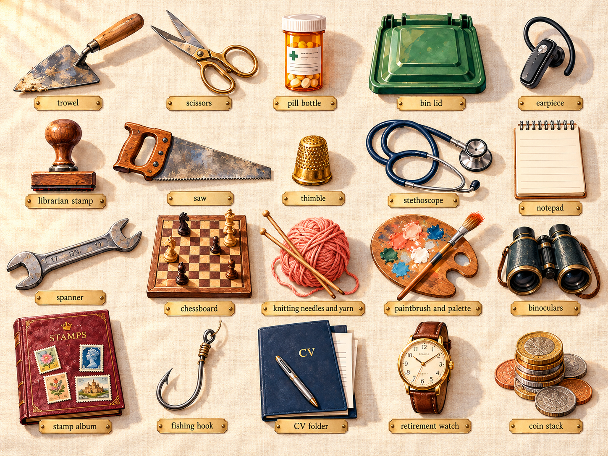
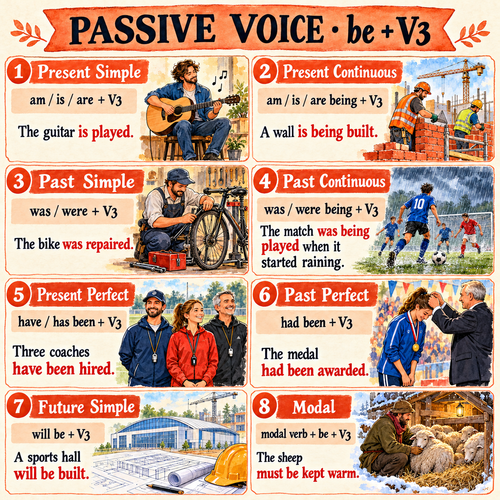
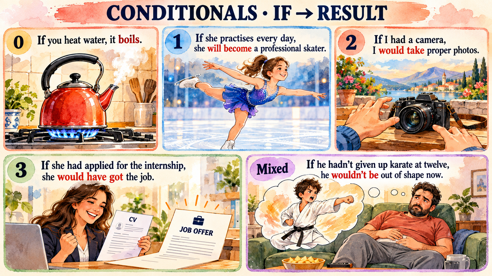
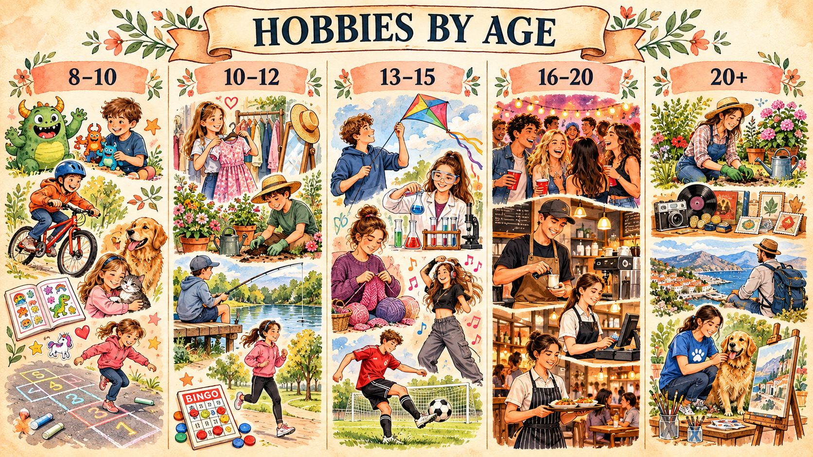
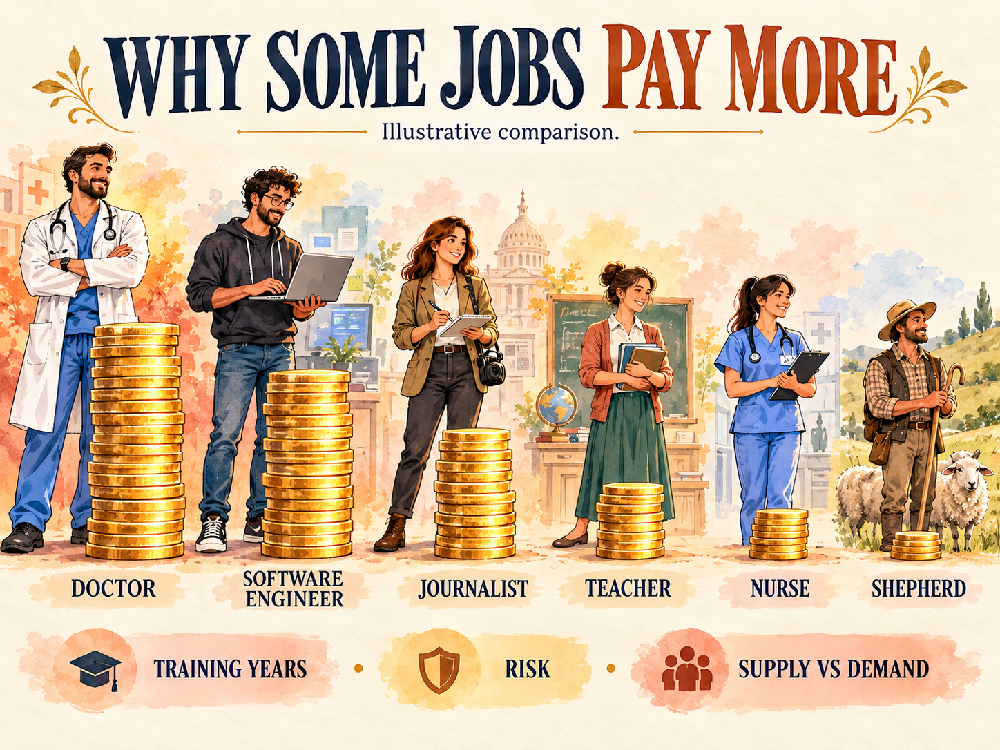

Jobs & Hobbies
Work, interests & choices
Explore professions and hobbies, practise Passive Voice and Conditionals, read two stories — A Bodyguard and The Verger — and prepare for a job interview.
Warm-up · jobs & interests
Choose an answer. You can change your choice and try again.
Vocabulary · 20 jobs & hobbies words
Tap a card or use Enter / Space to show its meaning. The grouped glossary below adds useful phrases for the unit.

Open the grouped vocabulary glossary
15 useful phrases · jobs & hobbies
Learn the phrases, then complete the sentences. Use at least five phrases in your answers to the discussion questions.
Open six discussion questions
Vocabulary practice · definitions & gaps
Round 1: match each description to a job. Round 2: use the vocabulary from the cards.
Passive Voice · eight common forms
Use be + past participle. This table contains seven tense forms and one modal construction. Type the whole missing verb phrase.

| Form | Structure | Example |
|---|---|---|
| Present Simple | am / is / are + V3 | The equipment is checked every day. |
| Present Continuous | am / is / are being + V3 | The car is being repaired now. |
| Past Simple | was / were + V3 | Two assistants were hired last week. |
| Past Continuous | was / were being + V3 | The room was being painted at noon. |
| Present Perfect | has / have been + V3 | The application has been sent. |
| Past Perfect | had been + V3 | The doors had been checked before the visit. |
| Future Simple | will be + V3 | The candidates will be interviewed tomorrow. |
| Modal passive | modal + be + V3 | The application must be signed. |
Practice A · complete the passive form
Practice B · Active → Passive
Conditionals & wish · real choices, imagined lives
Core practice: Zero / First, then Second Conditional and wish. Open the challenge for Third and Mixed Conditionals.

| Use | Form | Example |
|---|---|---|
| Zero | If + Present Simple, Present Simple | If a mechanic heats metal, it expands. |
| First | If + Present Simple, will + verb | If she applies, she will get a reply. |
| Second | If + Past Simple, would + verb | If I were a vet, I would work with animals. |
| Third | If + Past Perfect, would have + V3 | If she had applied, she would have got an interview. |
| Mixed: past → present | If + Past Perfect, would + verb | If I had trained as a vet, I would work with animals now. |
| Wish: present regret | wish + Past Simple / could | I wish I had more free time. |
| Wish: past regret | wish + Past Perfect | I wish I had sent my CV earlier. |
For an ordinary future condition use a present form after if. In imagined situations, were is the formal choice for all persons; was is also accepted here with I / he / she.
Block A · Zero & First
Block B · Second & wish
B1+ challenge · Third, Mixed & past regrets
Exam-style grammar · a careers club
One continuous story, nine gaps. Change the word in capitals to fit the grammar. This is author-created practice in the style of ОГЭ; it is not an official exam task.
Exam-style word formation · careers & skills
Continue the careers-club story. Make one word from the word in capitals for each gap.
Vocabulary speaking · ten different games
Work in pairs. Reuse the words from the cards and give full answers with reasons. Each round has a different speaking goal.
Features of a good job · your priorities
Click once for most important (green), twice for least important (red), and again to clear. Aim for five green and five red. Compare your choices.
Most important: 0 / 5 · Least important: 0 / 5
Show one possible answer
My top five would be interesting tasks, friendly colleagues, a manageable workload, creative freedom and time for hobbies. I value them because I want to enjoy my work and keep learning.
My bottom five would be a prestigious title, a uniform, business trips, independent work and working from home. These are personal preferences, not a ranking everyone must agree with.
Job features · use the checklist
Complete the sentences with words from the checklist. Then choose three features and explain your priorities.
Bodyguard · two sides of the job
Discuss possible features of the work. Conditions differ between employers and roles; this is a speaking activity, not a promise about salary or benefits.
- The work can give you a strong sense of purpose.
- You may travel to different places with a client.
- You develop observation and planning skills.
- Some roles offer opportunities for specialist training.
- You may enjoy working as part of a close team.
- You may face danger and need to react quickly.
- Your working hours may include nights and weekends.
- You may spend long periods waiting and staying alert.
- Changes to a client’s plans can affect your own plans.
- Responsibility for another person’s safety can be stressful.
Show a sample opinion
Bodyguard practice · skills in action
Apply the vocabulary to new situations instead of repeating the advantages list. Round 1: identify the skill. Round 2: complete the sentences.
Unusual Jobs: A Bodyguard · textbook reading
Afanasyeva–Mikheeva, English VIII, Unit 1, printed pp. 9–10, adapted there from Speak Out, 4–5/1999. Read the text as a historical textbook article: its budget, staffing and protection details are not presented as current information.
Browser voice reads the displayed text. Use Stop to end playback.
1. The profession has been recently romanticized through American films. For a long time it has been primarily associated with American lifestyle, and it’s not surprising.
2. Altogether, four American presidents have been assassinated and attempts have been made on the lives of others. The first president to have been killed was Abraham Lincoln. He was shot while attending the theatre in Washington. James Garfield was shot a few months after his inauguration and died at the age of forty-nine. William McKinley was killed in Buffalo, New York in 1901. John Kennedy was assassinated in Dallas, Texas in 1963.
3. After the third assassination in 1901, the protection of presidents was put in the hands of the United States Secret Service and nowadays wherever a president goes he is surrounded by Secret Service guards who all have a tendency to look very similar — the unsmiling men with short haircuts and sunglasses are easy to recognize in the crowd. There are women too, but many more men. If the president wants to go fishing or horse-riding, the Secret Service agents will have to learn enough about the activity to accompany him.
4. Their training as agents takes place at a training centre in a little town called Beltsville, Maryland. All the prospective agents are carefully selected. The actual training includes learning to shoot pistols, rifles and how to drive at high speeds and in minimum space. Agents always examine the area of a proposed presidential visit. In fact, they can veto a visit if they consider it unsafe. Then they decide what equipment and manpower will be needed. The team also produces details of escape routes and plans for emergency evacuation. In June 1992, for example, when a problem arose on President Bush’s trip to Panama City, he and Mrs Bush escaped in an armoured limousine which had been parked in a side street.
5. Nowadays, there is a large number of people protected by the Secret Service. The president and vice-president and their families, former presidents, their wives and children up to the age 16, visiting heads of state and spouses, other important foreign visitors and US representatives on special missions abroad. The Secret Service budget is about $500 million.
6. The Secret Service does of course keep very quiet about its operations but it is of great interest to the general public. That is why there are so many books and films about secret agents. Film companies often employ real agents as advisers so that the film should be true-to-life.
Open textbook-style follow-up tasks
- Give short titles to paragraphs 2, 3, 4 and 5.
- Find three examples of Passive Voice and explain why the passive is useful here.
- Ask a question whose answer is “Because they consider the place unsafe”.
- Prepare a 60-second recruitment speech: what skills would a suitable candidate need?
The Verger · an unexpected career
Additional reading: an author-created simplified retelling of W. Somerset Maugham’s story. This is a separate text, not the Bodyguard passage from Unit 1.
Edward Foreman had been the verger of St Peter’s Church in London for sixteen years. He loved the quiet building and took pride in his work. One day a new vicar discovered that Edward could neither read nor write. The vicar was unwilling to keep an illiterate verger, so Edward had to leave his job.
Edward was deeply disappointed, but he left with dignity. As he walked through London, he wanted to buy some cigarettes. He noticed that there was no tobacconist in the street. He had to walk a long way before he found one. This gave him an idea: perhaps a small shop would do well in an area like this.
Using his savings, Edward opened a tobacco-and-sweets shop. He worked hard, treated people politely and kept a close eye on the week’s takings. The business was a success. In time he opened more shops and built up a successful chain.
Years later, a bank manager suggested that Edward should invest some of his money. During their conversation, the manager discovered that Edward still could not read or write. He was amazed that someone without those skills had built such a successful business.
The manager wondered what Edward might have become if he had been able to read and write. Edward smiled. He replied that he would still have been a verger at St Peter’s Church. Losing his first job had unexpectedly led him towards a different career.
Show a model answer
Phrasal verbs · work & free time
Learn the expressions, then type the complete phrase needed in each single gap.
| Expression | Meaning | Example |
|---|---|---|
| take up | начать заниматься | She took up photography last year. |
| give up | перестать заниматься | He gave up chess to spend more time on music. |
| apply for | подать заявку на | She applied for a summer job. |
| look into | изучить, выяснить | We are looking into training opportunities. |
| carry out | выполнить | The team carried out the safety checks. |
| get on with | ладить с; продолжать | She gets on well with her colleagues. |
Hobbies by age · textbook activity & discussion
Author-created reading based on the lists in Unit 1, printed pp. 3–4. The illustration uses different age bands; it is a visual discussion prompt, not a source of statistics.

The opening activity in Unit 1 groups examples of interests by age. These are examples for discussion, not rules about what people of a particular age must enjoy.
For very young children, the list includes soft toys, crayons, building bricks, nursery rhymes and fairy tales. For children aged six to ten, it suggests bicycles, train sets, keeping pets, collecting stamps or coins, comics and games such as hide-and-seek.
For the eleven-to-fifteen age group, examples include flying kites, chemistry sets, knitting and sewing, board games, dancing lessons and football. For older teenagers, the activity mentions photography, music, puzzles, camping, roller-skating, skateboarding and computers.
The adult list contains a wide range of interests, including gardening, carpentry, fishing, jogging and fitness classes. A person can of course take up any suitable hobby at a different age. Interests change with opportunities, free time and personal preferences, and a hobby can sometimes develop into a career.
Open 12 comprehension & discussion questions
Why some jobs pay more · reading & reasoning
Author-created reading. The illustration is a discussion prompt, not a salary chart or a ranking of people’s value.

Why do some jobs pay more than others? There is no single explanation. Training, responsibility, demand for a skill, working conditions and an employer’s resources can all affect pay.
Some professions require years of study before someone can work independently. Other jobs require rare practical skills. If few qualified people are available, employers may offer more to attract them. However, long training does not automatically lead to high pay.
A job may also involve risk, difficult hours or responsibility for other people. These factors can influence pay, but their effect depends on the employer and the wider economy. Two people with the same job title can earn very different amounts.
Finally, a salary is not a measure of a person’s value. Work that is important to society is not always highly paid. When choosing a career, it makes sense to think about interests, working conditions, opportunities to learn and a realistic income together.
Reported speech · after a job interview
A separate interview follow-up, not another Passive or Conditionals drill. Practise backshift in a past report; use statement word order in reported questions.
“Can you start?” → He asked if I could start.
“Why do you want this role?” → She asked why I wanted that role.
Interview English · face to face & on the phone
Open each toolkit, listen to useful phrases, then act out two different interviews.
Opening the conversation
Interests & motivation
Skills & examples
Experience & learning
Availability
Questions & closing
Role-play A · a library assistant
Interviewer: Tell me about yourself and your interests.
Candidate: Answer with one interest and a skill it has helped you develop.
Interviewer: Why would you like to work at our library?
Candidate: Give a reason connected with the work.
Interviewer: A visitor cannot find a book. What would you do?
Candidate: Explain two steps you would take.
Interviewer: Do you have any questions for us?
Candidate: Ask about duties or training.
Role-play B · a phone interview
Show one candidate’s model answer
My dream job · plan, write, review
Write 100–140 words. Explain the job, the skills you need, one advantage, one difficulty and how a hobby might help you prepare.
Show a model answer
Open the self-check
- Have I answered all five points?
- Have I used vocabulary from this lesson?
- Is my Passive sentence formed with be + V3?
- Does my Conditional sentence match the meaning?
- Have I checked spelling, punctuation and word count?
Homework · choose one task
Choose one task with Maria. The section buttons can add the relevant material to My Homework.
📝 Open extra practice · 8 sets · jobs, hobbies, grammar & interviews
Jobs in context
Extra practice for this unit. Check your answers, correct any mistakes and try again.
Hobbies & phrases
Extra practice for this unit. Check your answers, correct any mistakes and try again.
Work & responsibilities
Extra practice for this unit. Check your answers, correct any mistakes and try again.
Word formation
Extra practice for this unit. Check your answers, correct any mistakes and try again.
Passive review
Extra practice for this unit. Check your answers, correct any mistakes and try again.
Conditionals review
Extra practice for this unit. Check your answers, correct any mistakes and try again.
Reading vocabulary
Extra practice for this unit. Check your answers, correct any mistakes and try again.
Interview follow-up
Extra practice for this unit. Check your answers, correct any mistakes and try again.
🎯 ОГЭ-practice · ФИПИ format · 3 задания
Три блока в формате ОГЭ 2026: грамматическая трансформация (задания 32-34), словообразование (задания 35-38) и монолог (задание 3 · 2 мин · 7 баллов). Тема — jobs & hobbies.
ОГЭ Grammar transformation · задания 32-34
Put the word in brackets into the correct grammatical form. Don't change the meaning. ФИПИ пример.
ОГЭ Word formation · задания 35-38
Form a word that fits the sentence from the base word in CAPITALS. ФИПИ пример.
• Jobs:
-er / -or / -ist / -ian → drive → driver · act → actor · science → scientist · music → musician• Adjectives:
-ful / -less / -ous / -able / -ive → help → helpful · hope → hopeless · fame → famous · create → creative• Adverbs:
-ly → careful → carefully · quick → quickly• Negatives:
un- / dis- / in- / im- → happy → unhappy · possible → impossible
ОГЭ Monologue · задание 3 · 2 минуты · 7 баллов
Monologue in FIPI format. Preparation time 1.5 min · speaking time 2 min · 10-12 sentences.
Your foreign friend Lily is doing a project about hobbies and future careers among Russian teenagers. Help her and answer some questions. Speak about:
- what hobby is popular among your friends and why;
- how a hobby can help you choose a future job;
- what job you dream of and why;
- what skills are important for your future job;
- what advice you would give a teenager who hasn't chosen a career yet.
Don't forget to make an introduction and a conclusion.
📋 Scaffolding phrases
- Hi Lily, I'd like to answer your questions about…
- Thanks for your interest. Let me tell you about…
- First of all,… · Secondly,… · Another thing,…
- As for…, I think… · Speaking of…, I believe…
- Finally,… · The last thing I want to say is…
- …because it helps me…
- The reason is that…
- …which is why I enjoy / dream of…
- That's all I wanted to say. Hope it helps your project.
- To sum up, hobbies and future careers are closely linked.
⚠ Common mistakes to avoid
- Covering only 3-4 bullets instead of all 5 → автоматически минус К1
- No introduction / no conclusion → минус К2
- Reading from a script instead of speaking → минус К3
- Less than 10 sentences → минус за объём
- Repeating "I like / I don't like" every sentence → минус К3 (lexical range)
Practice progress
0 / 0 answers correct
Includes the extra practice. Speaking and writing are reviewed with Maria. This practice score does not estimate a CEFR level.